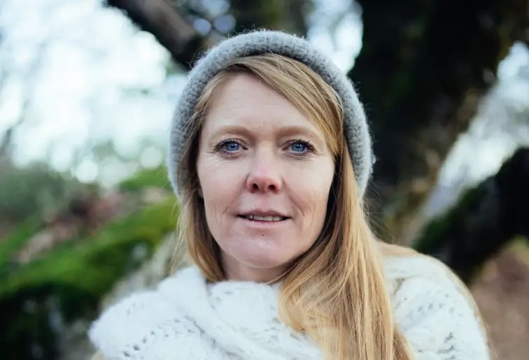

a residential intensive of the practice of circling and surrendered leadership, with Martje of all there is.
gathering together in a home in the autumn days, where the year's fullness decomposes. a space emerges to explore our being in a relational field. creating the life we want to live for this little time. together. epic or simple.
this is a relational awareness practice — guided by group intelligence, shaped by the present moment. it is an ongoing discovery of yourself and the other, within the greater web of all that is.
a practice of deepening in being together. how is it to be me, whilst also looking to be with you in your world? together, exploring what's here and what's alive in our meeting.

Martje is a lover of the wild unknown, a mystical artist, a wanderer of earth and other realms. she lives in a yurt next to a river, says hi to almost every tree she meets, and wants to be with you in your inner landscape: to discover and behold the places where you were not met by family, friends, and mainly by yourself.
after a degree in cultural and social studies she has worked with people in diverse contexts for over twenty years. walking her own path of transformation, she trained in embodiment, deepening presence, soul work and working with developmental trauma (NARM), and has been extensively trained by Transformational Connection (formerly Circling Europe) in leading groups. she runs all there is — relational arts, offering circling and 1:1 coaching.
the TC hub, a home where people gather to practice and live together. it's part of fools' valley, a research lab and residency on land north of lisbon, with a dancehall, a swimming pond, a sauna, a gigantic octopus and more.
to join, apply for a residency at the TC hub for nov 9–15 through our regular application. choose "transformational connection is my primary interest" so we know you're coming for the intensive.
apply for the week →